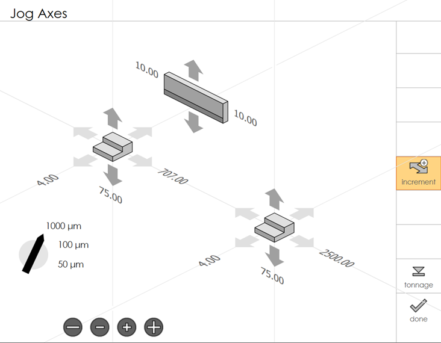
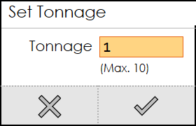

Jog Axes
Jog Axes panel is used to control one or more axes of the machine component to ensure precise bending operation. The current positions of all the axes can also be viewed in this panel.
Jogging the axes
Each back-gauge is surrounded by six arrows which can be used to move it in one of the six primary directions. When you touch one of these axes, the arrows turns yellow in colour.

| On some press-brakes, the Jog Axes screen can be used to only select the axes to be jogged, and separate Jog Forward and Jog Backward buttons mounted on the operator panel must be pressed to do the actual axis movement. In that case, the jog axes panel will appear a bit different from the one shown in the picture above. |
Press the teach button to record the current back-gauge positions as the input positions for the new bend.
| The teach button is displayed only when the jog option is used from the direct program mode. |
Press the increment button to jog the axis in step of 50 or 100 or 1000 microns.
Press the arrow to select an axis and click the and buttons to change the value.
Target position is denoted by a small arrow symbol.
| Machine will go to stop mode. Press start to move the axis to the target position. |
| To achieve this, no other mode should be active. |
Press the tonnage button to set the tonnage used during ram manual moves.

The real-time position will also be displayed (if a real run-time is connected, capable of providing the position).